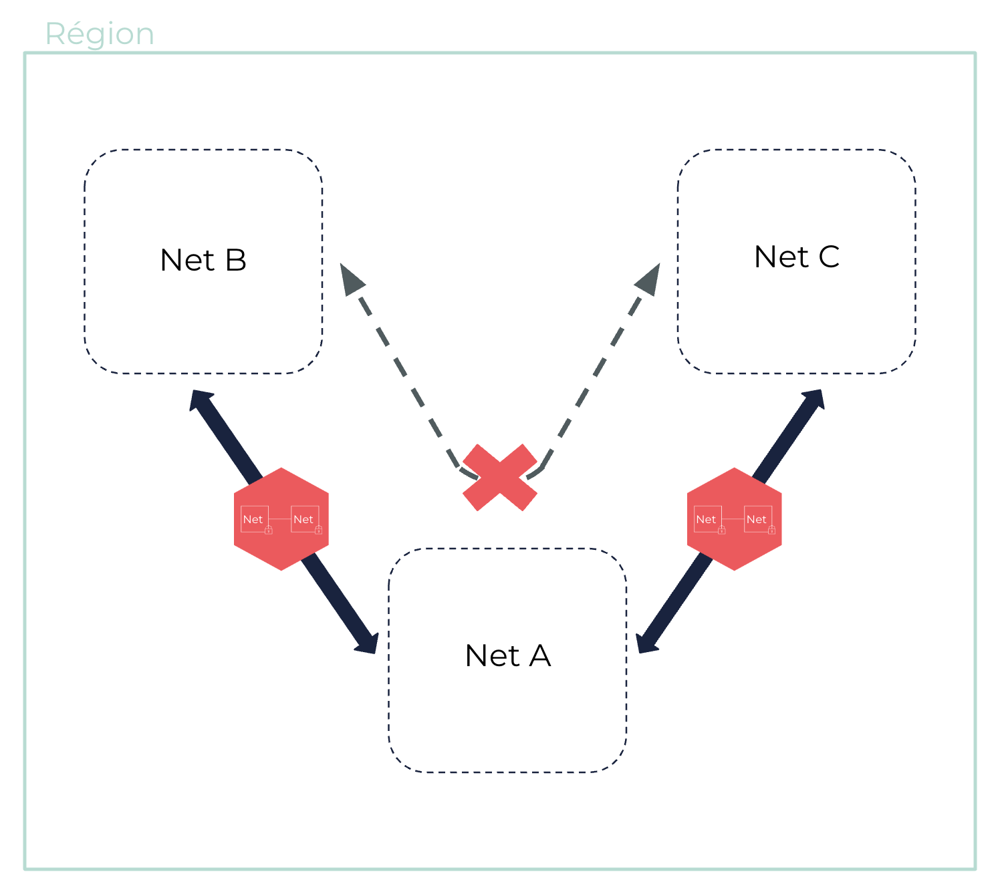
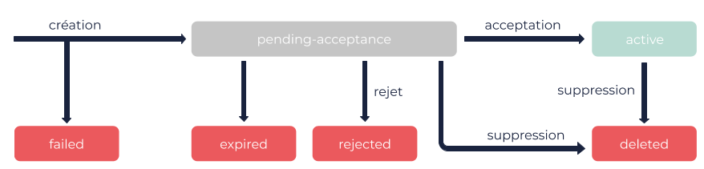
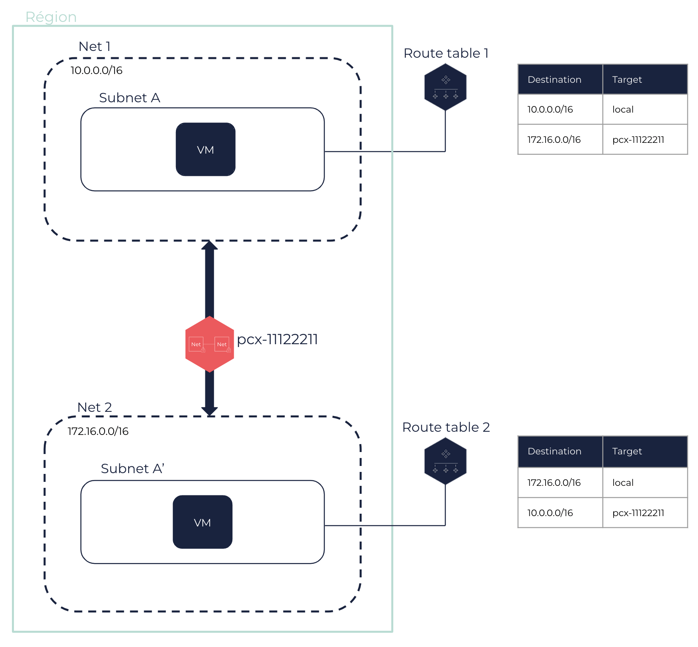

À propos des Net peerings
Un Net peering (appairage de réseaux) permet à deux Nets de communiquer l’un avec l’autre par une connexion privée. Les machines virtuelles (VM) des Nets pairs peuvent accéder les unes aux autres.
Informations générales
Les Nets pairs peuvent appartenir au même compte ou à des comptes différents. Vous pouvez créer plusieurs connexions pour chacun de vos Nets. Cependant, vous ne pouvez pas créer plus d’une connexion entre deux mêmes Nets au même moment.
Une Net peering connexion est une connexion privée utilisant des IP privées. Les blocs CIDR des Nets pairs ne doivent pas se chevaucher. Les Nets pairs doivent être situés dans la même Région. Cependant, leurs Subnets peuvent être situés dans des Sous-régions différentes. Pour en savoir plus, voir À propos des Régions et Sous-régions.
|
Les Nets pairs doivent contenir au moins une VM chacun avant la création du Net peering. |
|
Exemple de deux blocs CIDR qui ne se chevauchent pas :
|
Lorsque vous créez une connexion, une requête est envoyée au Net auquel vous voulez vous connecter. Le propriétaire de ce Net doit accepter cette requête pour que la connexion soit établie. Pour en savoir plus, voir la section Cycle de vie ci-dessous.
|
Une fois la connexion créée, le trafic réseau entre les Nets pairs est possible. Vous devez mettre à jour leurs route tables et leurs security groups pour autoriser le trafic. Pour en savoir plus, voir la section Configuration réseau ci-dessous.
Un Net peering est une connexion directe, individuelle et non transitive. Ainsi, des Nets pairs ne peuvent pas communiquer avec d’autres Nets auxquels ils ne sont pas directement connectés. Deux Nets chacun connecté au même troisième Net ne peuvent pas utiliser celui-ci comme point de transit pour accéder l’un à l’autre.

|
Pour assurer redondance et haute disponibilité, vous pouvez connecter deux Nets dont les Subnets sont situés dans des Sous-régions différentes. |
Cycle de vie
Une fois demandée, un Net peering peut passer par plusieurs états. À chaque état, différentes actions sont possibles.

-
failed: La création du Net peering a échoué. Cela se produit, par exemple, si les Nets sont situés dans des Régions différentes, ou si leurs blocs CIDR se chevauchent. Une connexion à l’étatfailedne peut être ni acceptée, ni rejetée, ni supprimée. -
pending-acceptance: La connexion est en attente d’une action du propriétaire du Net accepteur, qui peut l’accepter ou la rejeter. Entre-temps, le propriétaire du Net requêteur peut toujours supprimer sa requête. Si aucune action n’est effectuée, la requête expire après 7 jours. -
expired: La requête a expiré. La connexion ne peut plus être acceptée, ni rejetée, ni supprimée. -
rejected: La connexion a été rejetée par le propriétaire du Net accepteur. Aucune connexion n’est créée entre les Nets. La connexion ne peut plus être acceptée ni supprimée. -
active: La connexion a été acceptée par le propriétaire du Net accepteur. Une connexion est créée entre les Nets. L’un ou l’autre des propriétaires des Nets pairs peut la supprimer. -
deleted: La connexion a été supprimée par l’un ou l’autre des propriétaires des Nets pairs.
Les connexions dont l’état est failed, expired ou deleted restent visibles pendant 1 heure.
Configuration réseau
Route tables
Pour autoriser le trafic entre des Nets pairs, vous devez mettre à jour les route tables associées à leurs Subnets.
Chacun des propriétaires des Nets doit créer une nouvelle route avec le bloc CIDR de l’autre Net en destination, et l’ID du Net peering en target. Cela permet aux VM de diriger le trafic entre les deux Nets.
|
Nous vous recommandons d’attendre que le Net peering devienne |

Pour en savoir plus, voir À propos des route tables et Tutoriel : Configurer un Net peering.
Security groups
Pour autoriser le trafic entre les VM des Nets pairs, vous devez mettre à jour les security groups associés à leurs VM.
Chacun des propriétaires des Nets doit ajouter les règles appropriées autorisant les flux sortants et entrants depuis et vers le Subnet de l’autre Net. Pour en savoir plus, voir À propos des security groups et Tutoriel : Configurer un Net peering.
Pages connexes